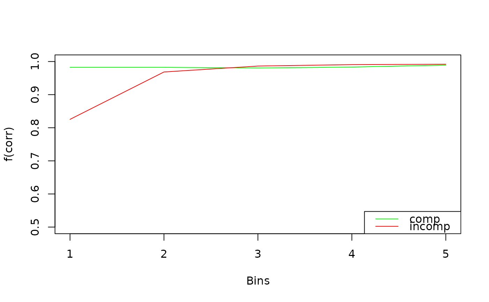
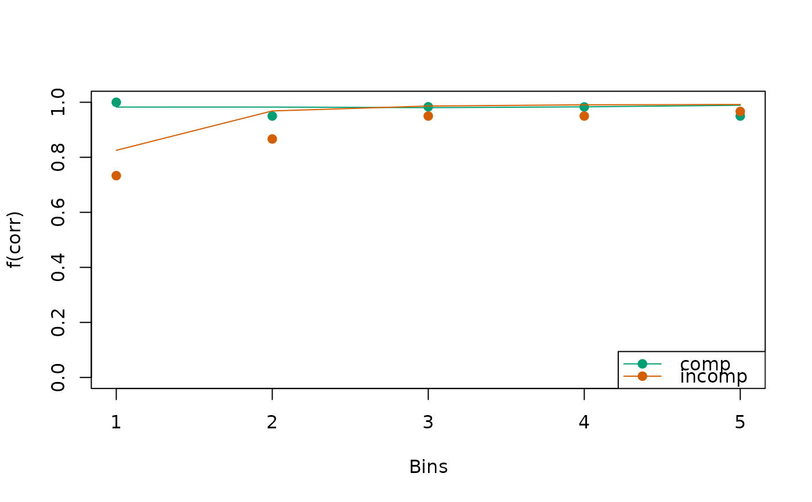
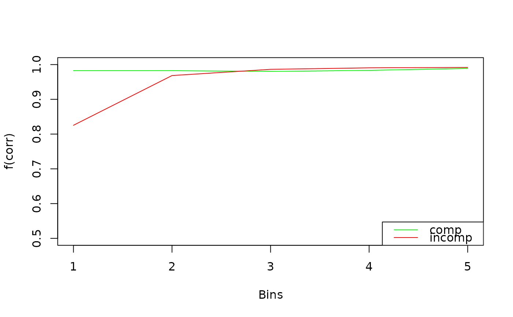
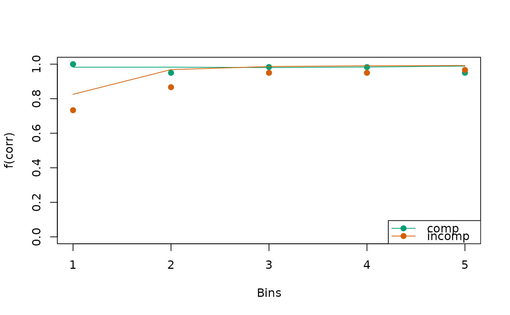

Visualizes conditional accuracy functions (CAFs) for observed and/or predicted data. This is useful for assessing model fit or exploring response patterns across conditions or participants.
Arguments
- x
an object of
type = "cafs", typically returned bycalc_stats().- ...
additional graphical arguments passed to plotting functions. See
set_default_arguments()for the full list of supported options.- id
a numeric or character, specifying the ID of a single participant to plot. If
length(id) > 1,plot.cafs()is called recursively for each entry. Eachidmust match an entry in theIDcolumn ofx.- conds
a character vector specifying the conditions to plot. Defaults to all available conditions.
- col
a character vector specifying colors for each condition. If a single color is provided, it is repeated for all conditions.
- xlim
a numeric vector of length 2, specifying the x-axis limits.
- ylim
a numeric vector of length 2, specifying the y-axis limits.
- xlab, ylab
character strings for the x- and y-axis labels.
- interval_obs, interval_pred
logicals; if
TRUEandxcontains a column namedEstimate, error bars for observed data and shaded contours for predicted data are drawn, respectively.
Details
If x contains multiple IDs and no specific id is provided, the
function aggregates across participants before plotting.
Observed CAFs are shown as points, and predicted CAFs as lines. When
interval = TRUE and the input includes interval estimates (i.e., the
column Estimate exists), the plot includes error bars for observed data
and shaded contours for model predictions.
Colors, symbols, and line styles can be customized via ....
Examples
# Example 1: Model predictions only ---------------------------------------
a_model <- dmc_dm()
cafs <- calc_stats(a_model, type = "cafs")
plot(cafs)
 plot(cafs, col = c("green", "red"), ylim = c(0.5, 1))

# Example 2: Observed and predicted data ----------------------------------
obs_data(a_model) <- dmc_synth_data
cafs <- calc_stats(a_model, type = "cafs")
plot(cafs)

# Example 3: Observed data only -------------------------------------------
cafs <- calc_stats(dmc_synth_data, type = "cafs")
plot(cafs)
# Example 4: Observed data with interval ----------------------------------
cafs <- calc_stats(dmc_synth_data, type = "cafs", resample = TRUE)
plot(cafs)
plot(cafs, col = c("green", "red"), ylim = c(0.5, 1))

# Example 2: Observed and predicted data ----------------------------------
obs_data(a_model) <- dmc_synth_data
cafs <- calc_stats(a_model, type = "cafs")
plot(cafs)

# Example 3: Observed data only -------------------------------------------
cafs <- calc_stats(dmc_synth_data, type = "cafs")
plot(cafs)
# Example 4: Observed data with interval ----------------------------------
cafs <- calc_stats(dmc_synth_data, type = "cafs", resample = TRUE)
plot(cafs)